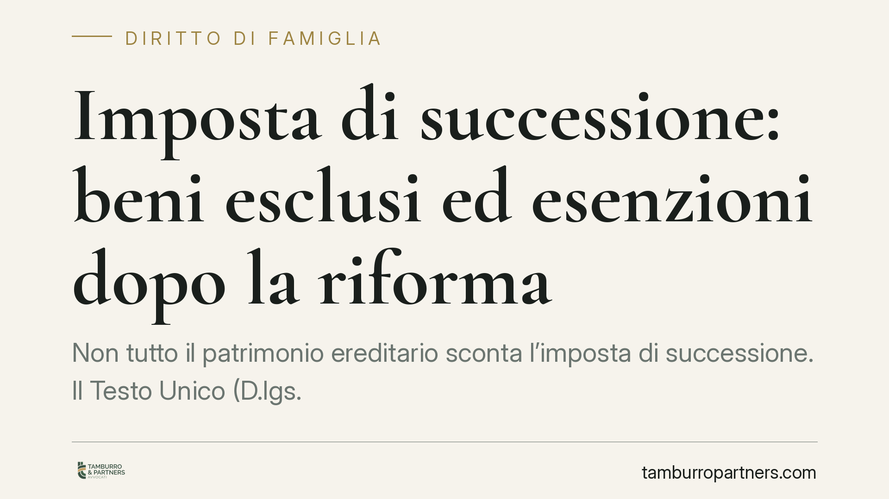

Imposta di successione: beni esclusi ed esenzioni dopo la riforma
Non tutto il patrimonio ereditario sconta l'imposta di successione. Il Testo Unico (D.lgs. 346/1990) prevede esclusioni oggettive ed esenzioni mirate, dai titoli del debito pubblico al passaggio d'azienda ai discendenti, fino ai lasciti agli enti del Terzo Settore. La riforma del 2024 ha ridisegnato parte del quadro: conoscerlo serve a pianificare e a dichiarare correttamente.

Il quadro normativo e la riforma del 2024
L'imposta di successione è disciplinata dal D.lgs. 346/1990 (Testo Unico delle successioni e donazioni, o TUS). Il D.Lgs. 139/2024, in vigore dal 1° gennaio 2025, ha razionalizzato la materia: tra le novità, l'autoliquidazione dell'imposta da parte degli eredi, che la calcolano e versano in dichiarazione salvo controllo successivo dell'Agenzia delle Entrate. Le franchigie e le aliquote storiche restano confermate.
Un chiarimento preliminare, perché è l'errore più frequente. Le aliquote e le franchigie derivano dall'art. 2, commi 48-49, D.L. 262/2006 (conv. L. 286/2006). Per il coniuge e per ciascun figlio (parenti in linea retta) l'aliquota è del 4%, ma solo sulla quota che eccede 1.000.000 di euro di franchigia per ciascun beneficiario. Non si tratta di un plafond unico da dividere: ogni erede in linea retta gode della propria franchigia piena.
Esclusioni oggettive: cosa non entra nell'attivo
L'art. 12 TUS elenca i beni che non concorrono a formare l'attivo ereditario. Tra questi rientrano i titoli del debito pubblico – BOT, BTP, CCT e assimilati – esclusi ai sensi dell'art. 12, comma 1, lett. h) TUS. Sono esclusi anche i beni culturali vincolati nei termini di legge e le indennità da assicurazione sulla vita corrisposte ai beneficiari.
Una precisazione utile a evitare errori dichiarativi: i veicoli iscritti al PRA non sono esclusi dall'attivo ereditario. L'art. 12 non li esenta e vanno pertanto considerati nel calcolo del patrimonio. Attenzione, quindi, a non ometterli dalla dichiarazione.
Il passaggio d'azienda ai discendenti
L'art. 3, comma 4-ter, TUS esenta dall'imposta i trasferimenti di aziende e partecipazioni sociali a favore dei discendenti e del coniuge, a condizioni precise: per le partecipazioni in società di capitali, l'acquisizione o l'integrazione del controllo ai sensi dell'art. 2359 c.c.; e l'impegno a proseguire l'attività o a mantenere il controllo per almeno cinque anni.
Il mancato rispetto del vincolo quinquennale comporta la decadenza dal beneficio, con recupero dell'imposta, sanzioni e interessi. Sui presupposti dell'agevolazione esiste un orientamento consolidato della Corte di Cassazione, che negli anni ha affinato il requisito dell'effettivo esercizio dell'impresa e dell'integrazione del controllo. Trattandosi di indirizzo in evoluzione, consigliamo di verificare la giurisprudenza più recente prima di impostare l'operazione.
I lasciti agli enti del Terzo Settore
L'art. 3 TUS esenta i trasferimenti a favore di determinati enti con finalità di pubblica utilità. Il quadro va oggi letto alla luce del Codice del Terzo Settore (D.Lgs. 117/2017): le Onlus sono in fase di soppressione con l'entrata a regime del RUNTS (Registro Unico Nazionale del Terzo Settore), che ha assorbito la platea degli enti agevolati.
Nel regime transitorio, gli enti iscritti al RUNTS come ETS beneficiano dell'esenzione per i lasciti ricevuti, a condizione che il patrimonio sia destinato alle finalità statutarie. Per chi intende disporre un lascito solidale, è essenziale verificare l'attuale qualificazione dell'ente destinatario.
Comunione de residuo e asse ereditario
Nel regime di comunione legale, alcuni beni (i proventi dell'attività separata non consumati, i frutti dei beni personali) cadono in comunione solo allo scioglimento: è la cosiddetta comunione de residuo (artt. 177, lett. b e c, e 178 c.c.). Alla morte di un coniuge, il diritto del superstite su tali beni matura in quel momento.
La natura di questo diritto incide sulla composizione dell'asse: la quota che spetta al coniuge superstite in forza della comunione non è attribuita per successione e, pertanto, non concorre all'attivo ereditario tassabile. Resta discussa la qualificazione del diritto – reale o di credito – con riflessi sul calcolo. Si tratta di un profilo tecnico che va esaminato caso per caso.
Cosa fare in concreto
- Censisci l'intero patrimonio prima di dichiarare: i titoli di Stato sono esclusi, i veicoli al PRA no.
- Applica la franchigia corretta: 1.000.000 di euro per il coniuge e per ciascun figlio, con aliquota 4% sull'eccedenza.
- Valuta il passaggio d'azienda rispettando il vincolo quinquennale dell'art. 3, co. 4-ter, per evitare la decadenza.
- Verifica la qualificazione RUNTS dell'ente prima di disporre un lascito solidale.
- Ricostruisci la comunione de residuo con assistenza tecnica per separare la quota del coniuge dall'asse tassabile.
---
*Contributo informativo a cura di Tamburro & Partners - Avv. Giuseppe Tamburro. Non costituisce parere legale.*
Ogni famiglia ha il suo equilibrio.
Separazione, divorzio, affidamento, assegno: se vuoi un confronto riservato su una specifica situazione, scrivi allo studio. Ti rispondiamo entro un giorno lavorativo.